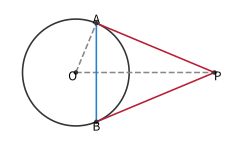
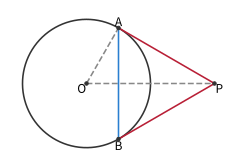
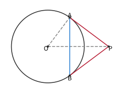

別冊練習問題 6 の解答 接線の長さと接点を結ぶ弦
(1) 半径 \(5\) の円の中心 \(O\) から距離 \(13\) の点 \(P\) から円に2本の接線を引き、接点を \(A,\ B\) とする。接線の長さ \(PA\) と、弦 \(AB\) の長さを求めよ。
接線長（三平方の定理）
\(OA\perp PA\)。
\[PA=\sqrt{OP^2-OA^2}=\sqrt{13^2-5^2}=12\]
弦 \(AB\) と \(OP\) の交点 \(M\)
\(OP\) は \(AB\) を垂直に2等分。\(\triangle OAP\) の面積を2通りに表す。
\[\dfrac12\cdot OP\cdot AM=\dfrac12\cdot OA\cdot PA\ \Rightarrow\ AM=\dfrac{5\cdot12}{13}\]\(AB=2AM\)
\[AB=\dfrac{120}{13}\]【答案】
\[PA=12,\ AB=\dfrac{120}{13}\]答
(2) 半径 \(4\) の円の中心 \(O\) から距離 \(8\) の点 \(P\) から円に2本の接線を引き、接点を \(A,\ B\) とする。接線の長さ \(PA\) と、弦 \(AB\) の長さを求めよ。
接線長（三平方の定理）
\(OA\perp PA\)。
\[PA=\sqrt{OP^2-OA^2}=\sqrt{8^2-4^2}=4 \sqrt{3}\]
弦 \(AB\) と \(OP\) の交点 \(M\)
\(OP\) は \(AB\) を垂直に2等分。\(\triangle OAP\) の面積を2通りに表す。
\[\dfrac12\cdot OP\cdot AM=\dfrac12\cdot OA\cdot PA\ \Rightarrow\ AM=\dfrac{4\cdot4 \sqrt{3}}{8}\]\(AB=2AM\)
\[AB=4 \sqrt{3}\]【答案】
\[PA=4 \sqrt{3},\ AB=4 \sqrt{3}\]答
(3) 半径 \(6\) の円の中心 \(O\) から距離 \(10\) の点 \(P\) から円に2本の接線を引き、接点を \(A,\ B\) とする。接線の長さ \(PA\) と、弦 \(AB\) の長さを求めよ。
接線長（三平方の定理）
\(OA\perp PA\)。
\[PA=\sqrt{OP^2-OA^2}=\sqrt{10^2-6^2}=8\]
弦 \(AB\) と \(OP\) の交点 \(M\)
\(OP\) は \(AB\) を垂直に2等分。\(\triangle OAP\) の面積を2通りに表す。
\[\dfrac12\cdot OP\cdot AM=\dfrac12\cdot OA\cdot PA\ \Rightarrow\ AM=\dfrac{6\cdot8}{10}\]\(AB=2AM\)
\[AB=\dfrac{48}{5}\]【答案】
\[PA=8,\ AB=\dfrac{48}{5}\]答